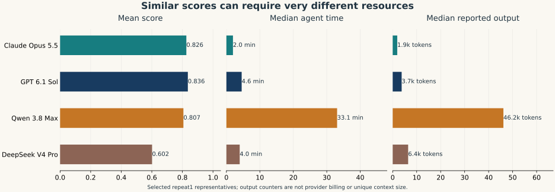
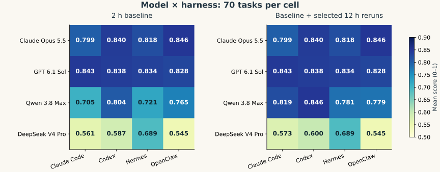

01 · 可用于文章的实验结果分析
本实验更支持这样的判断：通用agent擅长执行已有科学协议；困难集中在协议尚需推导、条件未对齐，或计算过程缺少独立验证时。
以下七段已按任务类型表述，不使用具体分子、具体题名或题号。得分范围为0–1，“达到0.8”是操作性高分阈值，不等同于科学结论已经完全正确。机制解释与观察结果分开标注。
可引用分析 01明确求解路径减少的是科学决策空间，而不只是代码长度
在固定输入的化学性质计算中，标准热化学量和成熟工具直接输出的静态电子性质表现较稳定：前者在6项任务、96个组合观测上平均得分0.951，全部达到0.8；后者在15项任务、240个观测上平均得分0.884。标准热化学量的Agent用时中位数约0.94分钟。结合轨迹，这类任务通常可以通过已有数据检索、单位换算或少量明确的工具调用完成，方法、对象和输出之间需要临时选择的环节较少。结果提示，通用agent的优势首先体现在把已有科学知识与成熟工具组织成可执行流程；高分并不必然来自更长的推理或更复杂的计算。
矩阵描述＋轨迹机制；“选择空间更小”是解释，尚无随机消融验证。
可引用分析 02复杂任务的主要风险往往出现在“定义到协议”的转换
晶体热力学与相稳定性、构象敏感的几何与相互作用两类任务，在当前合并视图中的平均得分分别为0.394和0.569，低于成熟静态电子性质任务。其难点不仅是调用求解器，还包括选择物理模型、确定环境与构象、区分可观测量、固定归一化与比较对象。轨迹中可见程序正常完成、数值收敛，却因分母、物理状态或计算条件不同而输出了另一个量。这说明，当前通用大模型与harness的组合可以执行较长的计算流程，但对科学定义与计算协议的一致性约束仍不充分；其中一部分风险还来自题面本身未提供足够条件，不能全部归因于模型能力。
两类分别仅3项、4项任务；类别比较未控制所有题目难度。
可引用分析 03重复自检只有在检查不同假设时才增加可信度
多次计算或多个数值算法给出一致结果，并不自动构成独立验证。轨迹复核发现，网格、随机采样和加密网格可以共同继承同一个体积单位转换；分辨率收敛也不能证明体积定义或统计分母正确。因此，科研agent的验证质量应按所覆盖的错误来源评价，而不只统计调用次数。维度分析、原子与对象身份核验、物理极限、对称性、收敛性以及独立实现之间的交叉检查，应分别承担不同的证伪职责。
机制来自目的性选取的案例，不据此估计全样本发生率。
可引用分析 04时间预算应按失败机制分配，统一加时的收益有限
在相同70项任务集上，36个两小时超时代表被获准的最长十二小时重新尝试替换，整体均分从0.751提高到0.767。补跑中16个达到0.8，14个仍为零分；36个入选补跑本身耗费约93.8个Agent小时。这表明，延长机会能够缓解部分构象搜索、几何优化和后续性质计算的长链瓶颈，但不能自动修复方法选择、科学定义和单位错误。由于补跑只针对原超时槽位，且属于重新尝试，这一结果应解释为选择性补跑策略的观察收益，不能作为所有任务延长预算的因果效应。
同槽位描述比较；无随机2h/12h对照。
可引用分析 05模型的能力边界还体现在质量与资源的组合上
在完整第一轮矩阵的合并视图中，GPT、Claude和Qwen的均分分别为0.836、0.826和0.807，按任务配对重采样的两两差值区间均覆盖零。然而，三者Agent用时中位数分别为4.56、1.96和33.09分钟，记录的输出token中位数约为3.7千、1.9千和46.2千。可见相近的结果质量可能对应非常不同的执行开销。该现象提示，科研agent研究需要同时评价得分、预算和证据完整性，不能仅以最终得分或链条长度判断系统优劣。
token是日志计数而非统一算力或账单；排序限于本次配置和任务样本。
可引用分析 06harness的价值依赖模型与任务，不呈现稳定的通用排名
四个harness在第一轮合并视图中的总体均分为0.749至0.781，按任务配对的两两差值区间均覆盖零，但同一模型更换harness时的变化幅度并不相同。GPT跨harness均分范围约0.015，DeepSeek约0.144；后者与Hermes的较好组合表现也在已完成的第二轮中再次出现。由此更合理的研究单位是模型、harness、任务类型和预算的组合，而不是脱离模型与协议给harness排出单一名次。需要进一步通过工具接口、上下文管理和停止策略的受控消融定位原因。
交互模式为描述证据；未证明由某个harness功能直接导致。
可引用分析 07数值得分与科研过程正确性应作为两个维度评价
本轮证据同时显示，协议不充分或目标指代不一致可以使合理计算得到零分，而计算未完整验证、转用相近实验锚点的答案也可能取得高分。数值比较有效衡量了提交值与参考值的接近程度，却不足以单独证明方法满足题意、结果可复现或证据链完整。因而，面向科研计算的评测应在保留结果评分的同时，引入协议一致性、对象身份、收敛与异常处理、单位一致性及来源条件匹配的独立检查。
由来源审计与高分/低分反例支持；本轮未改变正式成绩。
02 · 数据范围与分析方法
第一轮完整矩阵在同题上交叉比较模型和harness；先对另一因素取均值，再以70个任务为单位有放回重采样3000次，报告差值的95%百分位区间。不能把同一题的16个组合视为16道独立题。区间反映本任务集重采样的不确定性；题目并非从全部化学任务随机抽样，也未进行多重比较校正。
类型采用既有领域分类，仅改为通用名称，没有按本轮分数重新分组。主文类别表要求至少3项任务；少于3项的类别不支撑“普遍擅长/不擅长”的判断。用时采用原生Agent阶段墙钟时间，不等同于纯推理时间、求解器CPU时间或端到端批次历时。
冻结设置为skills_off、请求high、单响应输出上限64000、每trial 4 CPU与6144 MB、原始Agent限时7200秒。skills_off并不表示禁用工具。不同provider的high不保证相同推理算力；恢复过程中还存在镜像、路由和上下文压缩条件变化，模型与harness比较不能视为无混杂的随机实验。[1][2]
旧引用中的“44次超时、24个补跑”来自早期71题/未完成快照。本报告采用当前70题口径：基线36次原生Agent超时、36个入选补跑；全补跑campaign为42次尝试。不同分母和发布时点不能拼接。
03 · 哪些类型稳定，哪些类型容易失分
标准热化学量在4个模型上的类别均分都在0.943–0.956之间，harness间更接近；这类任务的高分具有较好的跨组合一致性。成熟工具直接输出的静态电子性质也较易高分，但模型差距明显，不能将“工具成熟”直接等同于“所有agent都能可靠使用工具”。
结构类任务内部并不一致：直接计数、成分读取与需要定义探针可达性或连通关系的几何问题，虽然都操作结构数据，认知负担却不同。已有单项结构计数的全组合满分现象，只能说明定义明确的结构操作可被可靠执行；不能推广成所有晶体结构问题都容易。
去除两项已独立审计发现定义风险的任务，仅作为敏感性分析：总体均分由0.767变为0.790；原子自旋布居类别由0.553变为0.829，剩余仅2项任务。这样的变化说明，一个定义错误足以扭曲小类别的“能力画像”。四模型总体排序未变，但不能用原类别低分证明模型普遍不懂该领域。正式分数和任务分母未修改。[3]
04 · 科研计算链条中，系统擅长什么、卡在哪里
“求解路径明确”可以理解为方法、状态、对象和输出契约已确定，agent主要执行已有操作；每增加一个未固定的科学选择，就增加一次选错计算对象的机会。这是从轨迹提出的机制解释，不能从类别均分直接识别因果。
两个反方向现象同时成立：多种积分方法一致但共享单位错误；某些自旋相关速率答案在关键计算未通过验证时转用实验锚点，却仍获高分。相应地，另一些轨迹包含较完整的显式耦合计算并获得高分。数值相近不能区分这三种证据质量。针对性案例索引见证据区。[4]
05 · 模型差异：质量、时间与token共同看

图1 · 同一组任务上的质量与资源画像。所有数字来自选中代表；输入与输出token均为记录量，不是账单或唯一上下文大小。
Claude：合并均分0.826，用时中位1.96分钟、P90约11.6分钟，属于本矩阵中低耗时、低输出token而得分较高的配置。标准热化学量、静态电子性质、垂直激发能等类别稳定；晶体热力学类别均分0.671，但仅3项任务，不能据此宣布其具有普遍的晶体自由能优势。
GPT：合并均分0.836，成熟静态电子性质类别均分0.999，构象敏感几何与相互作用0.769，显示较强的工具执行与对象处理能力。对晶体热力学类别则只有0.250，说明总体领先不意味着每个科学子领域领先。它与Claude的均分差仅0.0098；重采样区间覆盖零，不能稳健断言两者谁更强。
Qwen：在非共价结合能类别得0.937，静态电子性质0.965。轨迹中能看到较长的构象搜索、方法比较和自主纠错，也有加时后完成长链计算的实例。但其用时中位33.09分钟，输出token中位约46.2k，分别约为Claude的16.9倍与24.3倍；这一比例描述记录开销，不是标准化推理算力。它占第一轮合并代表Agent小时的约65.5%，且承担基线36次超时中的30次。其质量对预算的依赖最明显。
DeepSeek：在标准热化学量上仍有0.955，溶剂化自由能0.823；因此不能概括成“化学知识整体不足”。主要短板集中在静态电子性质工具执行（0.641）、构象敏感几何与相互作用（0.148）、密度积分派生物性（0.335）。总体合并均分0.602，输出token中位高于GPT与Claude，说明低分不能简单解释成没有投入足够文本预算。与harness的适配差异值得单独研究。
2h基线下，Claude/GPT相对Qwen的按题配对差值区间不含零；选择性补跑后，三者两两差值区间都含零。预算政策会改变模型比较结论，应同时呈现两种视图。
06 · “擅长哪些方面”的可比证据
这些是类别内、跨4个harness的等权均分，不是事先训练出的专业能力标签。较小类别的第一名易受单题影响；类别间的得分尺度和容差也不同。较可靠的表述是“在本样本的某类任务中表现较好”，不是“某模型天生擅长某学科”。
模型路由的研究价值由此出现：快速完成标准量与成熟工具任务，必要时对构象、单位、状态和方法作更严格验证；对复杂长链任务再分配专门预算。但本轮没有验证动态路由策略，也没有证实按上述表选择模型能在新题集上获得净收益。
07 · Harness差异：交互比单一排名更有解释力

图2 · 每格70项相同任务。两张矩阵分别对应等时限基线和选择性补跑政策，不能将两者的名次视为同一个实验条件。
总体差异较小，但预算条件会改变它。合并后Codex 0.781、Hermes 0.781、Claude Code 0.759、OpenClaw 0.749；全部两两差值的按题重采样区间均含零。2h基线中，Codex相对Claude Code的差值约0.040，区间约[0.006,0.073]；这是探索性、未作多重校正的结果，不能提升为稳定的通用优胜结论。
同模型内看资源更有意义。例如第一轮DeepSeek–Hermes的2h均分0.689、中位2.08分钟、输出中位约4.4k；DeepSeek–Codex为0.587、4.10分钟、6.4k。第二轮对应均分0.709与0.569，方向仍一致。但Codex恢复中有最终429零分裁定，且并发条件存在例外；这些差异不能仅归因于工具接口设计。[5]
可以提出的假设是：系统提示、工具粒度、输出截断、上下文压缩、进程等待与停止策略共同影响“模型能否把知识兑现为结果”。现有矩阵没有逐项操纵这些因素，因而不能给出“某harness因为记忆好/搜索强而获胜”的因果解释。
08 · 超时与投入：应识别瓶颈，而非统一扩大预算
构象敏感几何与相互作用、晶体热力学、自旋相关速率、密度积分派生物性合计占30/36次超时。这些任务通常包含搜索→优化→更高阶性质计算→校验与提交的依赖链，一处停滞可能耗尽下游预算。时间包含网络、进程等待和环境排错，无法仅凭墙钟时长断言“化学求解器太慢”。
投入与得分的全样本秩相关很弱：用时约0.005，输出token约0.017。控制任务和组合均值后，log(1+用时)与得分的残差相关约0.083，log(1+输出token)约0.115。这些是关联，不是“继续计算没有用”或“多想会变差”的证据；困难任务会主动消耗更多预算，且存在截尾和补跑选择。
可操作的启发是：先判断剩余瓶颈属于计算量、环境故障、定义不清还是验证不足；仅对能通过额外计算消除的不确定性追加预算。对科学定义和单位问题，应切换到协议核对与独立检查，而非继续加密同一错误流水线。
09 · 不同批次之间的对比：质量、资源与超时迁移
14个已验收组合的两轮2h结果总体接近，但“典型任务更快、长尾更重、超时槽位明显换位”同时成立。批次稳定性不能只由均分或超时总数判断。
本章只比较第一轮原始2h基线与第二轮2h正式代表，覆盖14个相同组合、70个相同任务，共980个配对slot；未完成验收的OpenClaw–DeepSeek与OpenClaw–Qwen不加入。第一轮含12h补跑的当前正式视图仅作敏感性分析，不与2h第二轮混作同预算比较。[13][14]
09.1 · 总体表现与资源变化
若改用第一轮含12h补跑的当前正式视图，14组均分为0.7825，第二轮仍为0.7540，差值−0.0284，95%区间[−0.0467, −0.0110]。该差异混入了第一轮选择性加时收益，不能解释为纯批次退化。
980个配对中188项提高、217项下降、575项得分完全相同；156项分差至少0.1。两轮得分的Spearman相关为0.755，平均绝对分差为0.099。总体均值接近说明批次级结论大体稳定，但不能据此推断单个任务或单个组合可复现。
09.2 · 两小时超时任务发生了怎样的迁移
超时按最终代表Trial的原生exception_type == AgentTimeoutError判定。第一轮有31个超时slot，第二轮有40个；其中只有18个是同一“组合×任务”连续超时，13个旧超时在第二轮消失，另有22个新超时。两轮超时slot并集为53，相似度仅34.0%。
其余6个已验收组合两轮均无超时：Claude Code–Claude/GPT、Codex–Claude/GPT、Hermes–GPT及OpenClaw–GPT。按provider汇总，Qwen由25增至31，DeepSeek维持6但具体slot换位，Claude由0增至3，GPT两轮均为0。
“两轮均曾超时”只表示同一道题在两轮都至少有一个组合超时，不保证是同一个组合。A006由2个组合增至6个，是第二轮最明显的共同热点；A011与B030分别由3个组合降至1个，B013由3个降至0个。Advanced超时slot约由19增至25，Basic由12增至15。
09.3 · 从批次差异中得到的启发
批次 INSIGHT 01总体均值稳定，不等于任务级行为稳定
得分均值下降0.0112且重采样区间跨零，但16%的slot分差至少0.1，平均绝对分差接近0.1。批次复核应同时报告总体位置、配对离散度和任务迁移；只看均分会漏掉模型在具体科学问题上的交换性成功与失败。
描述性复现分析；两轮环境与恢复路径并非完全相同，不能把全部差异归因于采样随机性。
批次 INSIGHT 02效率变化主要发生在分布尾部，而非典型任务
第二轮用时中位数下降13.6%，但P90增加19.2%，累计用时增加2.8%。Advanced子集得分下降0.0197、累计用时增加10.1%、Token增加17.5%；Basic子集用时下降1.7%、Token仅增加1.1%。这提示预算治理应监控阶段进度和长尾停滞，而不能用全局中位数判断资源压力。
用时是Agent墙钟时间，包含工具、网络与等待；不识别长尾增长的单一原因。
批次 INSIGHT 03超时更像模型、harness与任务的交互结果
超时净增9个，但背后是13个旧slot恢复与22个新slot出现；只有18/53个超时并集slot在两轮重复。DeepSeek超时总数保持不变，具体任务却发生替换。因而，按一次运行冻结“固有超时题清单”会高估任务本身的决定性；更稳妥的策略是记录多轮超时频率、所处工作流阶段与剩余进度。
本结论针对最终代表Trial；被替换的工程失败与全部历史尝试另有证据账本。
批次 INSIGHT 04资源变化不能从分数方向反推
GPT的四个已验收组合平均得分仅下降0.0059，但累计用时下降41.5%、记录Token下降14.6%；Qwen三个已验收组合得分下降0.0401，用时增加5.7%、Token增加8.7%。相近得分可对应不同资源路径，资源增加也不保证得分改善。跨批次评估应把质量、尾部用时、Token和异常迁移并列，而不是压成单一效率排名。
Token为保存的父会话计数；不含完整重试、子agent或provider账单。
第二轮仍缺少2个OpenClaw组合，且执行包版本、恢复条件、API异常和并发例外与第一轮并非完全相同。因此本章用于检验方向性和定位变化，不把第二轮汇总混入第一轮完整矩阵，不从未验收组合推断结果，也不将跨轮差异解释为单一因果效应。
10 · Token与成本口径：哪些比较成立
跨模型看的是“已记录资源画像”；同模型、同harness、同类任务的比较通常更接近一致口径，但仍受工具耗时、路由、缓存、上下文压缩和错误恢复影响。父会话token总量可作为诊断信号，不能替代统一采样的API账单和CPU时间分解。
11 · 对后续研究有价值的可检验假设
建议下一轮先修订已确认的定义风险，冻结新任务版本及科学协议；补齐完整交叉矩阵和独立重复；保留首次尝试、工程恢复、加时补跑的分层账本。研究假设应在未用于选路由或调提示的新任务上验证。以上仅为研究设计建议，本轮没有启动新实验。
12 · 定向文献对照与适用边界
本轮读取范围为上述arXiv页面摘要与元数据，2026-11-05访问并保存。本节属于定向背景检索，未进行全库检索、全文质量分级或荟萃分析；前述实验结论均来自本地日志与统计，不借文献代替本轮实证。